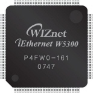

What is W5300 and How to use W5300 ?
1.2.1

W5300 is a 0.18um CMOS technology single chip into which 10/100 Ethernet controller, MAC, and TCP/IP are integrated.
W5300 is designed for Internet embedded applications where easy implementation, stability, high performance, and effective cost are required.
W5300's target application is the embedded internet solution requiring high performance such as multi-media streaming service. Comparing to existing WIZnet chip solution,
W5300 has been improved in memory and data process.
W5300 is the most appropriate to the products of IPTV, IP-STB and DTV transferring multi-media data with high-capacity. The Internet connectivity can be implemented easily and quickly only with single chip having TCP/IP protocol and 10/100 Ethernet MAC & PHY.
- High-Performance Hardware TCP/IP single chip solutions
WIZnet retains the technology of full hardware logic of communication protocols such as TCP, UDP, IPv4, ICMP, IGMP, ARP and PPPoE. In order to provide high-performing data communication, the data communication memory is extended to 128Kbyte and 16bit bus interface is supported in W5300. Users can utilize independent 8 hardware SOCKETs for high-speed data communication.
- More flexible memory allocation for various applications
The memory for data communication can be allocated to each SOCKET in the range of 0~64Kbytes. It is more flexible for users to utilize the memory according to their application. Users can develop more efficient system by concentrating on the application of high performance.
- Easy to implements for beginners
W5300 supports BUS interface as the host interface. By using direct and indirect access methods, W5300 can easily interfaced to the host as like SRAM memory. The data communication memory of W5300 can be accessed through TX/RX FIFO registers that exist in each SOCKET. With these features, even beginners can implement Internet connectivity by using W5300.
W5300 can provide Internet connectivity simply by setting
some register.
WIZnet provides
basic I/O funtions,
WIZnet SOCKET APIs and this document for your Internet connectivity application. You can learn how to initialize
W5300 and communicate according to the protocol types (TCP, UDP) by reviewing example code.
For example, Wiznet provide "TCP SERVER/CLIENT loopback" and "UDP loopback" program. Refer to
Main().
- "TCP SERVER loopback" program
This program works as "TCP SERVER" mode, and AX1 program of the testing PC works as "TCP CLIENT" mode. AX1 tries to connect to W5300 and if the connection is successful, AX1 transmits the data stream through the connection SOCKET. This program returns back the data stream from AX1 without processing through the connection SOCKET.
Refer to loopback_tcps().
- "TCP CLIENT loopback" program
This program works in "TCP CLIENT" mode and AX1 works in "TCP SERVER" mode. This program tries to connect to AX1 which is waiting as "TCP SERVR", if the connection is successful and W5300 receives data stream through the connection SOCKET, and then this program sends back the received data stream to AX1.
Refer to loopback_tcpc().
- "UDP loopback" program
This program uses unicast datagram communication of UDP protocol. This program operates same as "TCP SERVER/CLIENT loopback" program does. UDP communication includes unicast datagram communication and broadcast datagram communication, and basically supports 1-to-many communication that is used for many destinations with one SOCKET.
Refer to loopback_udp().